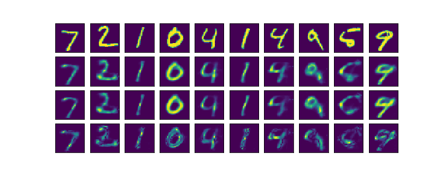
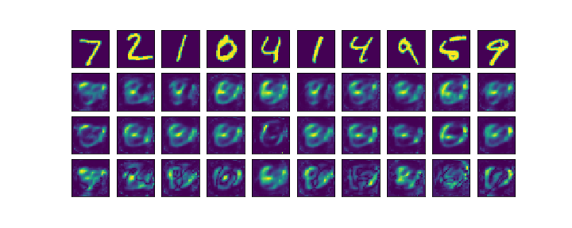
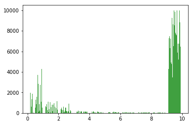
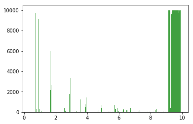
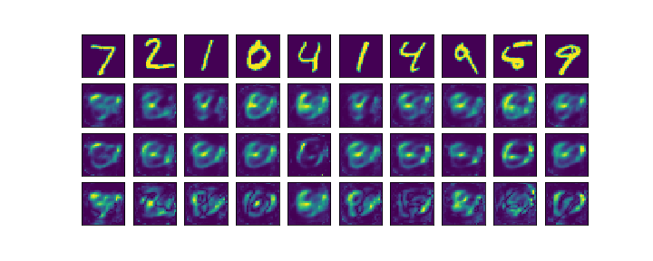

Reconstructions With Tuned Hyperparameters
In the following each figure consists of four rows: (1) input image, (2) first pass reconstruction, (3) second pass reconstruction, (4) difference
between first and second pass reconstructions.
1000 iterations:

2000 iterations:

3000 iterations:

4000 iterations:

5000 iterations:

6000 iterations:

7000 iterations:

8000 iterations:

9000 iterations:

Clearly, the tuned parameters cause the feedback to have a higher impact.
While the model with the old parameters was still able to form a reasonable
reconstruction when the first pass reconstruction was used as input to the
second pass, the same cannot be said for the model with tuned parameters:

(old parrameters)

(tuned parameters)
The following shows the frequency of different feedback magnitudes in the network over the
whole test set. The values shown are \(\mu_D\), i.e. the incoming feedback before
it has been processed in any way.


(left: old parameters, right: new parameters)
To further investigate the reliance on feedback, Gaussian noise with 0 mean and varying standard
deviations \(X \sim \mathcal{N}(0,\,\sigma^{2})\,\) is added to the feedback signal:
$$f(\mu_S, \mu_D) = \frac{max(0, \mu_S)}{1 - min(\frac{\beta_{max}}{\eta} \ (\mu_D+X), \beta_{max})}$$
2000 iterations:
3000 iterations:
4000 iterations:
5000 iterations:
6000 iterations:
7000 iterations:
8000 iterations:
9000 iterations:
(old parrameters)

(tuned parameters)
(left: old parameters, right: new parameters)